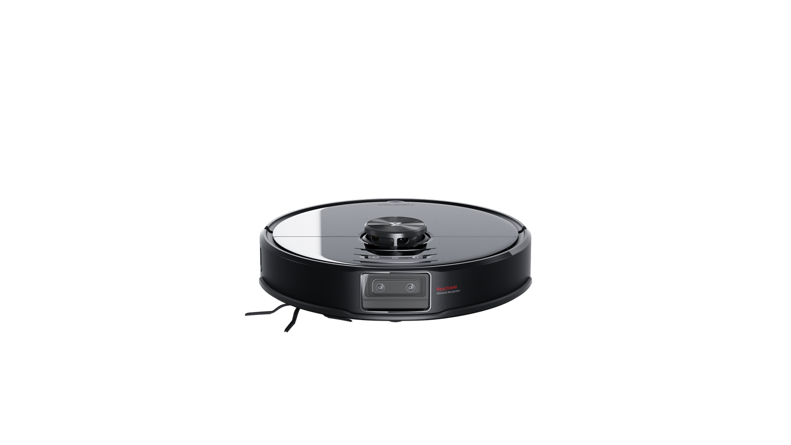
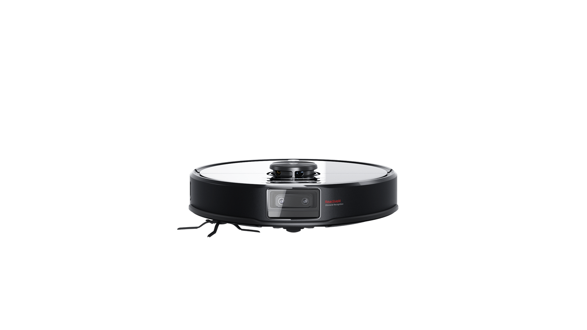
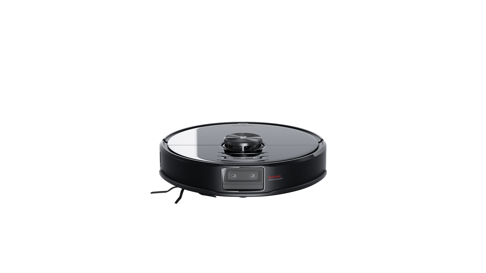
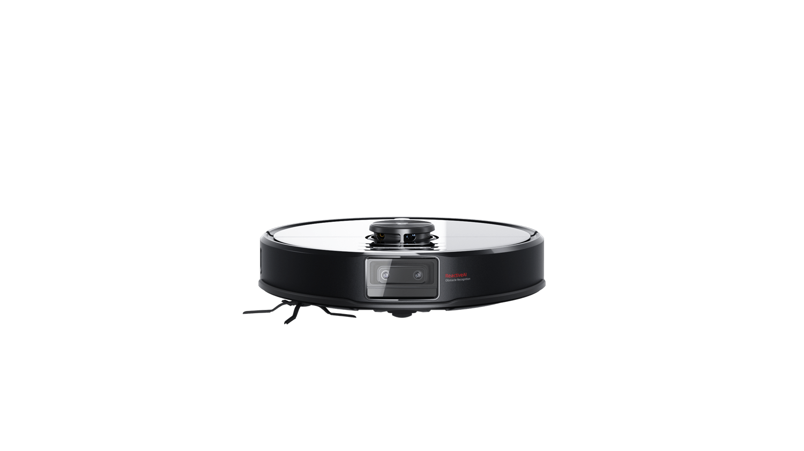

S6 MaxV
Wyraźna wizja. Sprytniejsze działanie.


 





Kolejny poziom inteligencji
System podwójnych kamer rewolucjonizuje proces sprzątania, dodając zaawansowane funkcje i zapewniając więcej spokoju niż kiedykolwiek wcześniej. Autorski system unikania przeszkód Reactive AI ™ sprawia, że robot omija napotkane przeszkody automatycznie. Moc ssania jest większa, by sprzątanie było dokładniejsze, a elektroniczny zbiornik na wodę czyni mopowanie sprytniejszym i bardziej spersonalizowanym.
Roborock S6 MaxV przenosi automatykę domową na wyższy poziom inteligencji.
Inteligentne omijanie przeszkód
Zaawansowane rozpoznawanie przeszkód
Potężny, 8-rdzeniowy procesor Qualcomm ®
Moc ssania większa o 25%
Inteligentny moduł mopa
Dwoje oczu, by zobaczyć
Istnieje powód, dla którego wszystkie ssaki mają parę oczu - widzenie stereoskopowe pozwala na lepszą percepcję. Używając dwóch kamer, S6 MaxV nie tylko widzi przeszkody na swojej drodze, ale też dokładnie szacuje ich lokalizację i rozmiar oraz dostosowuje swoją trasę poruszając się wokół nich. A wszystko w mgnieniu oka! Dzięki kamerom działającym w podczerwieni, może także widzieć w ciemności. W połączeniu z uznanym systemem PreciSense TM LiDAR firmy Roborock, nawigacja po pomieszczeniach jest szybka i skuteczna, czy to w dzień czy w nocy.
Widzieć to wiedzieć
Napędzany przez 8-rdzeniowy procesor Qualcomm® APQ8053 system Reactive AI, jest o 50% wydajniejszy niż ten znany z modelu S6. Napędza on sieć neuronową Tensorflow wykorzystującą najnowszą architekturę uczenia maszynowego. Został on przetestowany na dziesiątkach tysięcy rzeczywistych obrazów, dzięki czemu rozpozna i uniknie najczęściej spotykanych w domu przeszkód, które mogą stanowić problem dla innych robotów, począwszy od zbłąkanych butów poprzez przewody, aż po nieczystości domowych zwierzaków i wiele innych.
* Na podstawie wewnętrznych testów producenta z wykorzystaniem wzorzystych obiektów o wysokim kontraście w dobrze oświetlonych warunkach. Skuteczność rozpoznawania obiektów może się różnić w zależności od warunków.

Unikanie nieznanego
Lepsza percepcja oznacza, że S6 MaxV unika także przeszkód, których nie potrafi rozpoznać. Każdy obiekt - nawet szeroki na trzy i wysoki na pięć centymetrów - może zostać przez niego zauważony i ominięty. Bez problemu poradzi sobie z pozostawionymi na ziemi zabawkami, miskami na karmę czy kubkami z niedopitą poranną kawą. Idealnie sprawdzi się w tętniących życiem domach.
* Na podstawie wewnętrznych testów producenta z wykorzystaniem wzorzystych obiektów o wysokim kontraście w dobrze oświetlonych warunkach. Obiekty muszą mieć od 3 do 8 cm wysokości i być szersze niż 5 cm.


Zaprojektowany pod kątem prywatności
W wypadku domowych kamer, prywatność i bezpieczeństwo mają kluczowe znaczenie. Każdy obraz zarejestrowany przez system ReactiveAI jest natychmiast usuwany.
Nic nie jest duplikowane. Nigdy.
Nic nie jest przechowywane. Nigdy.
Nic nie jest wysyłane do chmury. Nigdy.
Co leży w domu
Dzięki **** Rzeczywiste ikony wyświetlane w aplikacji mogą różnić się od tych, przedstawionych w opisie. umieszczonym na ekranie możesz zobaczyć, co leży na podłogach Twojego domu. Możesz przeglądać mapy i trasy, które pokonuje Roborock S6 MaxV widząc dokładnie to, co on. Dzięki temu możesz też sprawdzić czy trasa, którą odkurzacz będzie pokonywał jest czysta. Aplikacja poinformuje Cię, gdy wymagana będzie Twoja uwaga.

Maksymalna moc ssąca
W S6 MaxV użyto najpotężniejszej turbiny spośród wszystkich dotychczasowych modeli. **** Testy wewnętrzne producenta zgodnie z normami IEC 62885-5: 2016/5.8. mocy ssącej to o 25% więcej niż w modelu Roborock S6, co daje MaxV moc wystarczająco dużą, by lepiej wychwytywać drobny kurz z podłóg i skuteczniej czyścić dywany.
Sięgnij wyżej
Systemy wielopoziomowego mapowania wykorzystujące system LiDAR oraz rozpoznawanie otoczenia sprawiają, że robot **** Aplikacja może zapisać maksymalnie 4 mapy. Mapa każdego piętra musi być indywidualnie ustawiona przed rozpoczęciem sprzątania. rozpoznaje kondygnacje. Każda z nich może mieć ustawione niezależne strefy wykluczone, wirtualne ściany i strefy bez mopowania. S6 MaxV rozpoznaje je automatycznie, bez konieczności uruchamiania aplikacji Roborock.
Elastyczne mopowanie
Ustaw harmonogram mycia podłogi dla każdego pomieszczenia z osobna, dostosuj ilość wody dla każdego z nich, ustal strefy bez mopowania, by ominąć dywany. To tylko część możliwości jakie daje Ci aplikacja.
200 m2
Zbiornik na wodę o pojemności 297 ml pozwoli umyć do **** Na podstawie wewnętrznego testu producenta, wykonanego na twardych podłogach, z pełnym zbiornikiem wody, pełnym akumulatorem i niskim przepływem wody. Rzeczywiste wyniki mogą się różnić w zależności od charakterystyki pomieszczenia. Zasięg jest wartością szacunkową, opartą na założeniu, że 20% powierzchni zajmują meble i nie trzeba ich wycierać..
Twój dom Twój porządek
W Roborock S6 MaxV możesz ustawić harmonogram sprzątania dla każdego pomieszczenia z osobna. Użyj Roborock S6 MaxV, by zapisać więcej pięter i odblokować zaawansowane funkcje mopowania.
Niekończąca się nauka
Inżynierowie Roborock na bieżąco ulepszają i aktualizują bazę obiektów, które mogą znaleźć się w Twoim domu. Twój robot może zostać zaktualizowany z dowolnego miejsca na świecie, wystarczy smartfon z dostępem do internetu.